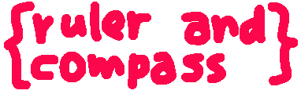
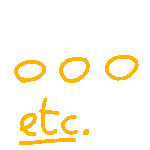

You approach the cabinet, and see its drawers are unlocked, and full of folders
containing other pages and things the webmasters made. An archive of sorts.
You also see a note saying basically all the html pages use other fonts, so
it might take a bit to load them depending on your connection. as well as
that some pages may not be screenreader friendly.
index archive
self-explanatory.
- index: the earliest version, with rounded corners.
- index2: a version with a sidebar and descriptions for pages.
- index3: a simpler version without a sidebar.
- index4: an even simpler version designed for mobile first.
- index5: a landing page that then led to the main index (index4).
- index6: a combination of the simple design with a sidebar and a new font.
- index7: another version but with more details like shadows and a blue tint.
- index8: yet another verion, but with glowing rectangles and back to dark mode.
- index9: a more basic version, following the formula of the pagelist on the right, and with an arrow motif!
- arrow: a possible landing page that led to index8. idk if used it
page archive
pages that mostly didnt see the light of day, some i just used to practice layout and css.
handdrawn/doodles
When i originally made the handdrawn/doodles page, as the name suggested, everything was supposed to be handdrawn, even the text. But after trying to chroma key the text+drawings out (because i didn't want an ugly border in the images), once with black on white and then with black on green to see if it helped (it didn't, i suck at chroma key), i just gave up and had to settle for the separated text and drawing.
first couple tries
↑ top of folder- original {handdrawn} page (Might take a while to load because of the large images)
since everything else was handdrawn (except for the text), the buttons were also supposed to be handdrawn, but the contrast sucked (especially the etc button) so i scrapped it for pixel-y gifs, and changed the header accordingly.

What i ended up using was these:
-

-

Also, during the 5th redesign, i tried to remake the buttons to be much smaller and easier to see, but i couldn't make it work right so i kept the big buttons.
But, now that i separate doodles based on the notebooks, these buttons are, sadly, obsolete now.
↑ top of foldertoki pona v1
an attempt at making a toki pona course, using colors to help learning! It's unfinished ofc, that's why it's here. Kind of a shame but tbh we don't rlly need another toki pona course. There are already great ones out there.
- intro
- #1: the basics (very unfinished)
unused images
These were to be used in the very unfinished #1 page. The colorcoding: red is the subject (preceded by li, after en if there are multiple), yellow is the predicate (followed by li), blue is the object (after e). Also notice these fit the 2 toki pona colors, loje (red), jelo (yellow) and laso (blue/green)!
ike! ...idk where this would be used
jan (person)
lape (sleep)

mi toki (mi = red = subject, toki = yellow = predicate)
moku (food/eating)
mi moku... e moku (moku = blue = object)
ona li toki
pona! ...i have no idea where this went either
pronouns: ona, mi, sina
suli
toki
toki pona
the modifier comes after the word being modified, not before like in english.
roadmap and part 1 script
basic sentence structure
adjectives and pi
preverbs
prepositions
o and anu
multiple subjects/pred/objects
names
asking things
taso and la
numbers
kili anu kasi la seme li pona tawa sina
(add in 'a!' somewhere)
Alright! Let's start off with the very absolute basics of saying things in toki pona.
In super dumb basic terms, a sentence can be divided into 2 (sometimes 3) main bits:
subject (the main actor/object)
predicate:
verb (what the subject is/does)
object (what the subject does to)
Let's see an example in English:
John eats an apple.
John is the main actor, his action is eating and what he eats is an apple!
(btw, the main order used in English is SVO (subject verb object), but other languages (actually most of them!) may use other orders of things)
In toki pona, it works much the same way (in SVO order too!), but here, the different phrase bits are separated by 2 particles:
li: comes before the predicate
e: comes before the object (if there is one)
Since we're just starting, i'll give you some words to start off with, some of them you already know (if you looked at the intro first):
1 . mi
2 . sina
3 . ona
4 . li
5 . e
6 . toki
7 . pona
8 . suli
9 . jan
10. lape
11. ike
12. moku
Let's do... I'm eating. How would you say that?
mi li lape?
Actually no, only for mi and sina (when they're on their own) you don't actually use li! It might look like it makes it more ambiguous but it actually works fine.
mi moku.
Also, notice that moku doesn't have any tense. "mi moku" can mean i eat, i ate, i will eat, i have eaten, i am eating, etc etc etc.
Again, context will tell you which is right.
Cool! What else?
ona li suli.
They are / It is... Big? Important? Old?
Again, context will tell.
What about they are talking?
ona li toki.
Some more examples but with objects this time:
moku li pona e mi.
toki li suli e jan.
Another thing you might have picked up in the intro is how one word can almost act as an adjective and modify the one that comes before it!
Actually that's important: the modifier modifies the word(s) that come *before* it, instead of after it, like in english.
Say, "big speech."
You wouldn't say suli toki, that would mean something more like greatness that has to do with speech or smth like that.
toki suli, on the other hand, can mean big speech, or important language or etc.
This is actually how the language's name works!
toki pona means good language or "the language of good". How nice!
I'll talk more about how modifiers work in the next lesson BUT, before i go, some more thingies!
sina pona.
This means "you're good". But you can also use it in a conversation to mean "thank you!"
"Hey, I made some food"
"Hey, that tastes real good, great job!"
"sina pona!"
"... what"
Another SUPER DUPER important thing to learn in toki pona is this:
jan pona.
It means "good person", but is also the main way to say "friend" in toki pona!
sina jan pona.
sina pona!
So... that's it for now.
What??? Already over??
C'mon i only learned twelve words :'(
Yeah, but there are still over 100 words left to go, and a bunch more things to learn to say in toki pona so...
That's it for now!
You now know how to:
Say basic sentences in toki pona
Call someone your friend
Say thank you
(i prob forgot other things too)
in toki pona!
Next time, even more words so you can know how to say even more things.
mi tawa!
toki pona v2
another attempt at a toki pona guide, but now scaled down to just the grammar. unfinished just the same.
roadmap
pronouns and li
e and modifiers
nasin nasa: subjectless phrases and lexicalization
pi and interjections
nasin nasa(ike): multiple pi
multiple subjects/verbs/objects
preverbs and o
preposition and ni
nasin nasa(pona): directional ni
numbers and names
nasin nasa: headless names
questions and anu
taso and LA (most powerful tool in toki pona)
- difference: a thing about the importance of difference. Moved it here because it... doesn't really fit. (Also i keep having to change this page every time i change the design of the site.) (and also because i now understand that difference isn't as important as
equalityequity.) (both are equally important tbh) - blips: short poems in pages that, though i like the vibe of them, they don't display properly on mobile.
- weather: my first thing with css, that uses wttr.in to get the weather where you tell it. It doesnt store your location anywhere, as you can tell by you having to tell it the location every time you open it.
- nameless zine: refer to journal entry. Also the first time i used Work Sans!
- lipu tenpo: a webzine version of lipu tenpo, partially driven by... anger at its new design. Also mainly just to flex my layouting muscles.
- latex test: a test for MathJax, a thing that lets you put LaTEX formulas in html! This specifically is some stuff i learned in uni about electron energy levels.
- unprobable blog: the sole post in a blog i knew i wouldn't really keep posting on. so here it is.
- hi: hi
- ilo Katen: a toki pona diary entry thing from a future.
- fulepõhiné: a half-done crappy mostly a priori conlang, mostly just css practice.
image archive
buttons
With (almost) every site redesign came the need for a new button to match.

The first version with the dark theme and old font, Inter (a Helvetica clone).
A version with quicker timing and a light theme.
An unrounded version with the font Work Sans.
A version corresponding to index 7 with a blue tint and kinda-burned in effect, also with the new header font, Inconsolata.
A 200x40 button that took a while to make but looks pleasing!
A redone version of the blue button to look like the very first button (!)
dingus
The images i used in my about me and status.cafe pages.
The first version, done digitally, probably GIMP.
A version changed to fit the light theme, now handdrawn. Though this is not the first light mode one, that is actually the one i'm using right now. This one includes my crappy hair!
The attempts at drawing the above thing, trying to get each line right ughh
Yet another realistic version, that i scrapped bc. multiple people. This just doesn't fit.
The attempts at drawing the above thing, again
An unused handdrawn image that was supposed to be used on my status.cafe but it doesn't... look particulalrly good.
The first image i actually used to kinda represent me in status.cafe.
The second version, now handdrawn again.
i originally put this in the blender page upstairs, but the contrast sucked so i took it out. now it's here.
another thing from the blenders, this time removed because it messed up the spacing.
a neat gif that used to be in the 404 page, but i removed it to keep it Simple.
a 3d version shortly used in the first attempt at the 7th redesign.
an image that was going to be put in a landing page (index5) that then led to the home page
text archive
.txt files i found worth putting here. mostly anxiety.
fonts to add eventually to the site eventually
gloock
tilt warp
bree serif
libre franklin
staatliches
anybody
concreto
me memo memória ria
ia
pha fálha palha lia a
ex xis iste tente ente
porém insta tantâneo
i i i i i i is
s ss sss ss s
e— não.
{i} note to webmaster and reader
- Note to webmaster:
This website can't include anything that can cause any type of problem in the future, to you or anyone so, take proper caution, however not unnecessarily extreme caution. Hence, no danger is and will ever present. All is and shall be well.
- Note to reader:
We assure that the purposes of this page (and for that matter, the entire website) do
not include illegalities of any sort, including piracy or copyright infringement.
The specific purpose of this section of the website ({i}) is externalizing any thoughts
(of good or bad quality) so that any visitor may or may not read and, therefore, acknowledge it.
The pompous language featured in this section of the website ({i}) features no real purpose
other than differentiating it from the remainder of the website and/or a satire/criticism of
the needlessly complicated language featured in a court of law. Also, it may change between
the items here featured.
We also want to make it abundantly clear that, may you have any questions regarding anything
contained in this website (related to the language or otherwise), you may contact us through
discord (where we can be contacted
quickest).
Also, please do not take any content of this page personally.
nothing
hello there fellow internet enjoyer.
nice to have you here. very nice in fact.
it's nice to know that someone has taken the time to explore my place to find this.
y'know?
anyways... where was i, i haven't even started this...
just earlier today i had another idea to redesign the site completely, with a black background (again) and this time based on this circular design.
which gave me anxiety, because it hasn't even been a single month since i redesigned this site for the 5th time, if i'm not mistaken.
in fact, this reminded me of the whole purpose this site once had: a place for me to make something pretty, no matter how much different or simple or complex it was.
and... it kinda lives on in the few differently styled pages. but not much.
and i've questioned whether this whole thing of different pages having different styles was a good idea.
...even though other sites like nyanseong.neocities.org does this, and very well might i add.
i suppose every page has their uniquenesses.
...uniquenesses. that's a lot of s's.
*ahem* anyways, this website.
it's grown. i don't know really how much it's grown but it has grown.
and i've never really liked the idea of keeping a blog, probably because i'd forget about it like i've forgotten about this whole website several times...
but, alongside the circular design idea, i had another idea for a list layout that i realized could work for a blog!
it's simple and effective.
i guess that's what this whole site is about, using little simple things and making the most out of them.
and i don't really know how well that's worked tbh.
...what am i even rambling on about...
i guess this blog should start somewhere, and semicoherent ramblings about this site and others seems like a good place to start.
one thing that i've learned from making this site is about accessibility.
i already had miniscule experience with typography but *just* enough to know that some fonts and color combinations are more legible than others.
some times the legibility has taken a back stand to looks but, overall accessibility is one of the main goals of this site.
the moment it hit me straight in the head was mobile compatibility and responsive layouts.
very very big thanks to natalie for teaching many things about this, but before i didn't know the @media rule, em units, min() and max() and many other things that i'm probably forgetting.
probably because the way i learned CSS and HTML was just looking up videos and documentation and basically brute force.
i guess i just like figuring out and doing things myself.
if it worked, it was good enough, good coding practices be damned.
mobile just wasn't in my mind when making this site.
but with the latest redesign i made it mobile-first (mostly), so that it looks at least decent on mobile.
i guess that's a strength with simpler layouts, it's more maluable.
uhm...
i suppose this is it for now.
if you want to see more about how this site was made, you can have a look at the misc folder and journal.
these are the main places where i'll be talking about this site.
this blog is meant to be about other stuff i like. if i ever feel like talking about it here.
and i suppose this site is just a place for me to put pretty things i think look nice to the world. maybe someone else likes it too.
ok it's time to finish this off. thank you for reading this far!
have a good day!
[also, it's just... kinda sad how probably no one will look at these words, or even the words in the words section of the page!
well that's a way to kill my motivation instantly...
but i guess that's how it goes on the net... *sigh*
people putting effort into something everyone (aside from a few) will just look at once and then never visit again unless having a reason to.
or maybe not! i don't know how people work.]